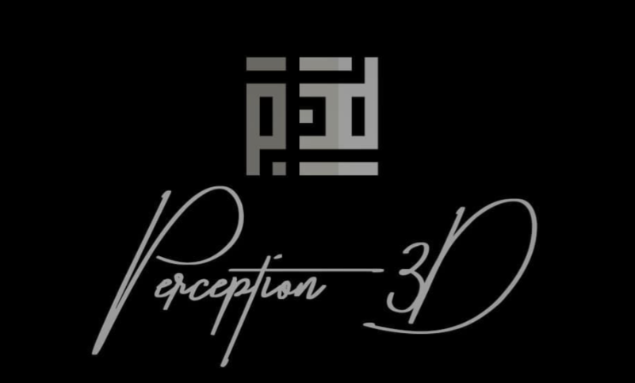

Valentina Galli & Flavio Barattucci Founder & Lead Designers
Chi Sono
Il design non è solo una professione, ma un linguaggio che parlo da sempre. Cresciuta in una famiglia di imprenditori edili, ho vissuto i cantieri fin da piccola, sviluppando una profonda comprensione e una forte passione per tutto ciò che riguarda l'edilizia. Nel tempo, però, il mio legame con il mattone si è evoluto: sono rimasta affascinata dalla struttura, ma mi sono innamorata del design.
Perché ho fondato lo Studio
Ho creato questa realtà per unire due mondi: la precisione tecnica del settore edile e l'innovazione estetica del design. Grazie alle mie radici, so come nasce e come si sviluppa un progetto a livello pratico e strutturale. Ho aperto questa azienda per trasformare il potenziale architettonico in spazi unici, capaci di coniugare la mia eredità imprenditoriale con una visione contemporanea e funzionale.
Competenze Tecniche
Trasformo le idee in realtà progettuali precise ed eseguibili attraverso l'uso dei principali software di settore. Ho consolidato la mia preparazione frequentando corsi ufficiali riconosciuti a livello internazionale:
- Rhinoceros – Modellazione 3D geometrica ed organica ad alta precisione.
- Autodesk AutoCAD – Progettazione tecnica bidimensionale e layout architettonici.
- Blender – Modellazione poligonale avanzata e sviluppo di concept creativi.
- Cinema 4D – Rendering fotorealistici di alto livello, texturing e illuminazione scenografica.
Contatti
Sei interessato a collaborare o desideri ricevere maggiori informazioni sui servizi di modellazione, ristrutturazione e rendering 3D? contattaci qui.
- Email: realperception3d@gmail.com
- Telefono: +39 393 39 17 225 / 392 204 9902
- Studio: Macerata (MC), Italia